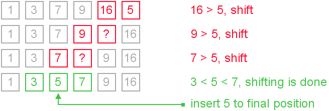

Insertion Sort
Definition
Insertion sort is a comparison sorting algorithm that sorts the elements one at a time. It takes a particular element from the array and places it in the correct index within the array. The process is continually executed until all items are correctly sorted in the array.
Implementation
Insertion sort works as follows:
- A selected element is sorted
- Pick the element next to the sorted sequence.
- Move all elements in correctly sorted sequence (that are of a higher value than the element) one position right.
- Place elements within the gap.
- Repeat above until all elements are sorted.
Example
Animation
Functions
Insertion Sort is implemented by the following function:
- insertion();
This function takes a selected element from the array and compares it with previous elements within the array. In order for elements to be exchanged, the element must be lesser than the previous element. That sort is then complete. The next element in the array is the selected element. The process repeats until the comparison has not reached the final index of the array.
Pseudocode
function insertion ( array arr, size ) for index 1 up to size of array element = arr [ index ] while index > 0 and element < arr [ index – 1 ] arr [ index ] = arr [ index – 1] decrement index arr [ index ] = element
Complexity
The optimal time complexity of Insertion Sort is O(N), which is only achieved when the array is already sorted. The amount of comparisons of elements within the array contributes to the worst time complexity of the algorithm, which is O(N ^ 2). As insertion sort is an in-place algorithm, it therefore has a space-complexity of O(1).
Advantages of Insertion Sort
Insertion sort is a sorting algorithm that shares similarities to bubble sort. However, insertion sort is more efficient because comparison of elements in insertion sort is less than the comparison of elements in bubble sort. Insertion sort is an algorithm that is efficient for small data values and for data sets that are almost completely sorted. Insertion sort is an in-place algorithm, which means it does not require additional memory space. This is effective when considering space complexity.
Disadvantages of Insertion Sort
Insertion sort suffers from a computational complexity of O(N ^ 2). If the number of elements to be sorted increases, the performance of the application would be slow. As insertion sort requires a large number of shifts, the algorithm would be inefficient for applications that require the sorting of large amounts of data.